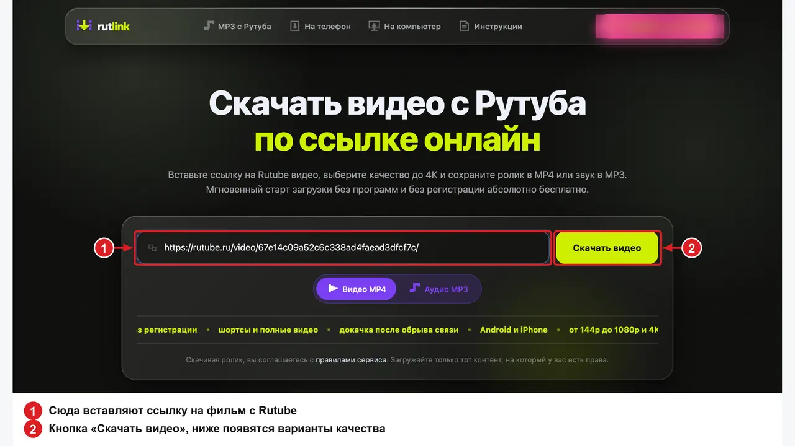
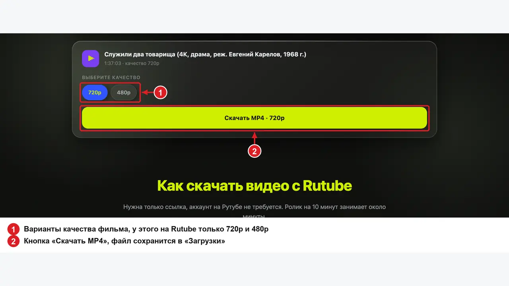
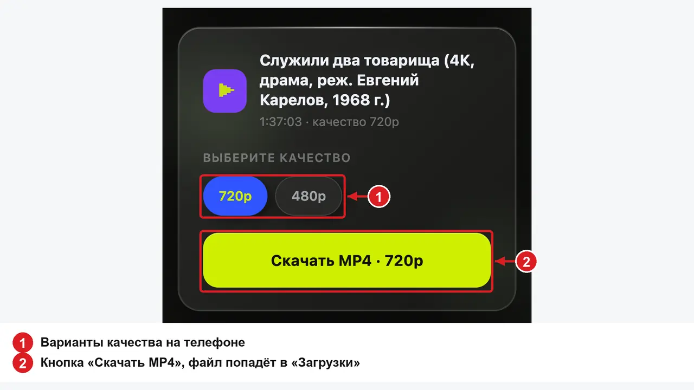

Как скачать фильм с Рутуба бесплатно: по ссылке, на компьютер, телефон и флешку
Скачать фильм с Рутуба бесплатно можно через онлайн-загрузчик в браузере, без программ и регистрации. Вы копируете ссылку на фильм, вставляете её на странице загрузчика, выбираете качество и получаете один файл MP4 с полным фильмом. Так сохраняются фильмы, которые на Rutube открыты для всех. Фильмы из платной подписки Rutube и PREMIER ни один сайт не скачает, это объяснено ниже. В инструкции разобрано, как отличить открытый фильм от платного и сколько весит файл в разных качествах. Отдельно про сериалы, мультфильмы, флешку для телевизора и про то, почему у фильма с пометкой «4K» в названии может быть только 720p.
Какие фильмы с Рутуба можно скачать
На Rutube два вида фильмов. Первые выложены на каналах киностудий, телеканалов и киноархивов, и их показ открыт для всех без оплаты. Это большая часть каталога, от советской классики до телефильмов последних лет. Вторые входят в платную подписку Rutube и раздел PREMIER. В карточке такого фильма стоит значок подписки, и без оплаты его не посмотреть.
Открытый фильм онлайн-загрузчик сохраняет целиком. Платный фильм защищён техническими средствами, и посмотреть его можно только подписчикам в плеере Rutube. Обход такой защиты запрещён статьёй 1299 Гражданского кодекса, поэтому ни один загрузчик платные фильмы не сохраняет. Если вставить ссылку на платный фильм, на странице загрузчика появится сообщение, что видео доступно только по подписке.
Проверить фильм проще до скачивания. Откройте его на сайте rutube.ru без входа в аккаунт. Если фильм воспроизводится, пусть и с рекламой, он открытый, и загрузчик его примет. Если вместо фильма появляется предложение оформить подписку, скачать его нельзя.
Как скачать фильм с Рутуба по ссылке
Онлайн-загрузчик это сайт, на котором вы вставляете адрес фильма с Rutube, нажимаете «Скачать видео» и получаете файл MP4. Устанавливать ничего не нужно, аккаунт на Rutube тоже не нужен. В этой инструкции шаги показаны на примере загрузчика RutLink, у него нет ограничений по длительности ролика и по числу скачиваний. Порядок такой.
- Откройте фильм на сайте rutube.ru. На компьютере выделите адрес в верхней части окна браузера и нажмите Ctrl+C, на Mac Cmd+C. В приложении Rutube на телефоне нажмите «Поделиться» под плеером и выберите «Скопировать ссылку».
- Откройте страницу загрузчика. На компьютере нажмите Ctrl+V, на телефоне нажмите кнопку «Вставить», и скопированный адрес появится на странице.
- Нажмите «Скачать видео». Через несколько секунд на странице появятся название фильма, его длительность и варианты качества, которые есть у этого фильма на Rutube.
- Выберите качество. Для телевизора берите 1080p или 720p, для телефона 480p. Сколько весит файл в каждом качестве, написано в следующем разделе.
- Нажмите «Скачать MP4». На странице появятся цифры, сколько мегабайт скачано и с какой скоростью. В конце браузер сохранит файл с названием фильма в папку «Загрузки».


Фильм на полтора часа скачивается так же, как короткий ролик, только дольше. Вкладку с загрузкой можно свернуть, закрывать её нельзя. Если связь оборвалась, загрузка продолжается с того же места после восстановления интернета, начинать заново не нужно. Одновременно у одного человека идёт одна загрузка, вторую ссылку вы вставляете после того, как первый файл сохранился.
Сколько весит фильм и какое качество выбрать
Размер файла зависит от длительности и выбранного качества. Минута фильма в 480p занимает около 8 МБ, в 720p около 12 МБ, в 1080p около 25 МБ. Для полнометражного фильма ориентиры такие:
- 360p, фильм на два часа около 0,5 ГБ, подходит для телефона, если мало памяти;
- 480p, фильм на два часа около 1 ГБ, подходит для телефона и планшета;
- 720p, фильм на два часа около 1,5 ГБ, подходит для ноутбука и телевизора до 40 дюймов;
- 1080p, фильм на два часа около 3 ГБ, подходит для большого телевизора.
Точный размер виден во время загрузки, на странице загрузчика написано, сколько скачано и сколько всего.
Качество файла не может быть выше того, в котором фильм загрузили на Rutube. В списке загрузчика есть только те варианты, которые есть у фильма на Rutube. Пометка «4K» или «HD» в названии фильма ничего не гарантирует. Пример с фильмом «Служили два товарища» 1968 года. В названии ролика на Rutube стоит «4K», а вариантов качества у него два, 720p и 480p. В списке загрузчика будут ровно эти два варианта. Старые фильмы часто лежат в 480p, и это нормально, файл получается лёгким. Если у фильма есть 1440p или 2160p, они тоже появятся в списке. Для телевизора с диагональю от 55 дюймов такой вариант имеет смысл, для остальных экранов хватает 1080p.
Сколько длится загрузка
Время зависит от скорости вашего интернета, выбранного качества и загруженности сервера. Фильм на два часа в 720p весит 1,5 ГБ. При скорости 5 МБ/с он скачивается за пять минут, при скорости 1 МБ/с за двадцать пять минут. Скорость в мегабайтах в секунду видна на странице загрузчика в первые секунды, по ней легко прикинуть общее время.
Фильм лучше скачивать дома по Wi-Fi или проводному интернету. Через мобильный интернет файл на полтора гигабайта скачивается долго, и эти полтора гигабайта вычитаются из вашего тарифа.
Как скачать сериал с Рутуба
Кнопки «скачать сериал целиком» у загрузчиков нет, серии сохраняются по одной. Скопируйте ссылку на первую серию, скачайте её, затем вставьте ссылку на следующую. У каждой серии на Rutube свой адрес, он виден в верхней части окна браузера, когда серия открыта.
Чтобы серии потом стояли по порядку, не переименовывайте файлы в процессе. Каждый файл получает название серии с Rutube, и в папке они выстраиваются по номерам. Серия на 40 минут в 480p занимает около 300 МБ, сезон из 12 серий около 3,5 ГБ.
Как скачать мультфильм с Рутуба
Мультфильмы скачиваются так же, как фильмы. На каналах «Союзмультфильма» и телеканалов на Rutube выложены сборники советских мультфильмов и отдельные серии, и большинство из них открыты. Для детского планшета хватает 480p, сборник на час займёт около 500 МБ. Скачанный файл открывается в любом плеере без интернета, это удобно в дороге, где связь пропадает.
Как записать фильм на флешку и посмотреть на телевизоре
Файл MP4 открывается на любом телевизоре с USB-входом. Скачайте фильм на компьютер, скопируйте файл на флешку, вставьте её в телевизор и откройте через встроенный проводник или раздел «Медиа» в меню телевизора. Подробно про телевизоры, старые модели и проводник написано в инструкции как скачать фильм с Рутуба на флешку и телевизор.
Учитывайте два ограничения. Флешка из магазина обычно отформатирована в FAT32, и в этом формате файл больше 4 ГБ на неё не записывается. Фильм на два часа в 1080p на такую флешку помещается, трёхчасовой фильм в 1080p уже нет. Для больших файлов отформатируйте флешку в exFAT. Это делается на компьютере. В Windows нажмите правой кнопкой на флешку в «Проводнике», выберите «Форматировать» и в списке файловых систем укажите exFAT. Все данные с флешки при этом удаляются. Второе ограничение касается старых телевизоров, они не воспроизводят 4K, для них выбирайте 1080p или 720p.
На компьютер, телефон и планшет
На компьютере и ноутбуке с Windows, macOS или Linux подходит любой браузер. Файл попадает в папку «Загрузки», оттуда его можно открыть, перенести на флешку или в видеоредактор. Если вы хотите выбирать папку сами, включите в настройках браузера пункт «Спрашивать, куда сохранять файлы».
На телефоне с Android откройте загрузчик в браузере, вставьте ссылку кнопкой «Вставить» и выберите качество. Файл сохранится в папку «Загрузки». Перед загрузкой фильма проверьте свободную память, фильм в 720p занимает около 1,5 ГБ. На iPhone файл сохраняется в приложение «Файлы», в папку «Загрузки». Чтобы фильм появился в «Фото», откройте файл, нажмите «Поделиться» и выберите «Сохранить видео». Отдельные шаги для телефона собраны на странице скачать видео с Рутуба на телефон.

Что сохраняет приложение Rutube
В приложении Rutube для Android есть сохранение видео для просмотра без интернета. По справке сервиса оно работает после входа в профиль и только из России. Без подписки можно сохранить одно видео, качество только 720p. Фильм хранится 30 дней внутри приложения и затем удаляется. Отдельного файла в памяти телефона не появляется, его нельзя переслать, записать на флешку или открыть на телевизоре. На iPhone приложения Rutube нет. Этот способ подходит, чтобы один раз посмотреть фильм в дороге. Если нужен файл, который останется у вас, подходит только онлайн-загрузчик.
Если фильм не скачивается
Причина написана на странице загрузчика под кнопкой «Скачать видео». Чаще всего встречаются три.
- «Это видео доступно только по подписке Rutube». Фильм платный, скачать его нельзя.
- «Это ссылка на приватное видео». Автор открыл фильм только тем, кому сам дал ссылку. Такие ролики скачать нельзя.
- «Не получилось найти ролик по этой ссылке». Фильм удалён, или в ссылке ошибка. Откройте фильм на Rutube заново и скопируйте адрес ещё раз.
Если загрузка началась и остановилась, проверьте интернет и нажмите «Скачать» ещё раз, загрузка продолжится с того же места. Если скачанный файл заметно меньше, чем показывал загрузчик, загрузка оборвалась, и файл нужно скачать заново.
Законно ли скачивать фильмы с Рутуба
Сохранять открытый фильм для личного просмотра закон разрешает, это предусмотрено статьёй 1273 Гражданского кодекса о свободном воспроизведении произведения в личных целях. Размещать скачанный фильм на других сайтах, продавать его или показывать публично без согласия правообладателя нельзя. За нарушение статья 1301 Гражданского кодекса предусматривает компенсацию правообладателю от 10 тысяч до 5 миллионов рублей. Фильмы из платной подписки защищены технически, и обход защиты запрещён отдельно, статьёй 1299.
Частые вопросы
Можно ли скачать фильм с Рутуба на компьютер без программ?
Да. Онлайн-загрузчик работает в браузере, устанавливать ничего не нужно. Файл MP4 попадает в папку «Загрузки».
Почему у фильма в списке нет 1080p?
Фильм загружен на Rutube в меньшем качестве. Проверить можно в плеере Rutube. Нажмите на шестерёнку и откройте пункт «Качество». В загрузчике будет тот же список.
Сколько весит фильм на два часа?
В 480p около 1 ГБ, в 720p около 1,5 ГБ, в 1080p около 3 ГБ. Точный размер виден во время загрузки.
Можно ли скачать сериал целиком одной кнопкой?
Нет. Серии скачиваются по одной, у каждой свой адрес. Каждый файл называется как серия, поэтому в папке они стоят по порядку.
Почему фильм в 1080p не записывается на флешку?
Флешка отформатирована в FAT32, а файл больше 4 ГБ. Отформатируйте флешку в exFAT на компьютере, данные с неё при этом удалятся.
Можно ли скачать фильм из подписки Rutube или PREMIER?
Нет. Такие фильмы защищены технически, и ни один загрузчик их не сохраняет.
Памятка
- Открытый фильм скачивается по ссылке через онлайн-загрузчик в браузере, платный из подписки не скачивается нигде.
- Фильм на два часа весит около 1 ГБ в 480p, 1,5 ГБ в 720p и 3 ГБ в 1080p.
- Качество файла не выше того, что у фильма на Rutube. Пометка «4K» в названии ничего не гарантирует.
- Сериал скачивается по сериям, файлы выстраиваются в папке по названиям.
- Для флешки с файлом больше 4 ГБ нужен формат exFAT.
Способы проверены 15 октября 2026 года на Windows 11, Android 15 и iOS 26.
Инструкция обновлена 15 октября 2026 года. Скачивайте фильмы для личного просмотра, права на видео принадлежат их авторам.